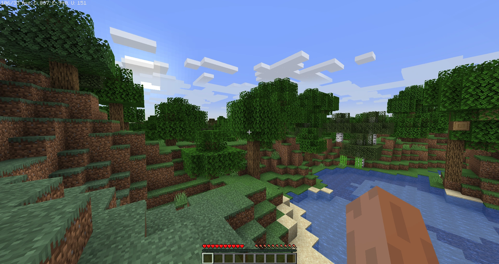
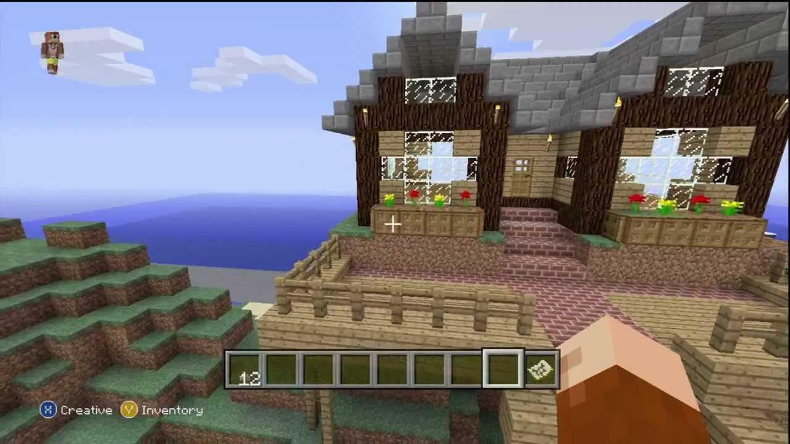

Minecraft: Gameplay
Step into the endless world of Minecraft, where adventure, creativity, and survival come together in an ever-changing sandbox experience. Discover vast biomes filled with mountains, forests, deserts, and deep oceans, each with its own unique resources and challenges. Mine materials, craft powerful tools, and build structures that range from simple homes to grand castles. Face dynamic weather, changing environments, and an ecosystem teeming with life. Every choice you make shapes your world, whether you're digging deep underground for hidden treasures or soaring high above with elytra wings. In Minecraft, the only limit is your imagination!
Survival Mode
In Survival Mode, every decision counts as you gather resources, build shelter, and protect yourself from the dangers of the night. Start with nothing and slowly progress by crafting tools, farming food, and mining for valuable materials like iron, gold, and diamonds. Face off against hostile mobs, including zombies, skeletons, and the explosive creepers that lurk in the dark. Explore vast cave systems, uncover hidden dungeons, and search for ancient ruins as you seek out rare treasures. Keep an eye on your health and hunger, manage your inventory wisely, and prepare for epic battles with powerful bosses like the Ender Dragon and the Wither. Do you have what it takes to survive and thrive?
Creative Mode
Unleash your creativity in Creative Mode, where you have unlimited resources and the power to shape the world as you see fit. Build massive castles, intricate cities, or pixel art masterpieces without worrying about gathering materials or fighting off enemies. Experiment with redstone mechanics to create working machines, traps, and even fully functional computers inside the game. Fly freely through the sky, explore new landscapes instantly, and bring your wildest ideas to life. Whether you're designing an amusement park, recreating famous landmarks, or crafting the ultimate dream home, the possibilities are endless. Let your imagination run wild and build something truly spectacular!
Infinite Possibilities
Minecraft is more than just a game—it's a world of endless opportunities, waiting to be explored. Tame wild animals, breed livestock, and farm crops to sustain your growing empire. Enchant weapons and armor to become stronger, brew potions for unique abilities, and discover rare artifacts hidden in ancient structures. Travel to other dimensions, including the eerie Nether and the mysterious End, where dark creatures and legendary bosses await. Customize your experience with texture packs, mods, and command blocks that allow you to create custom game mechanics and worlds. With frequent updates adding new features, biomes, and mechanics, Minecraft continues to evolve, offering something new for every kind of player. Are you ready to embark on your adventure? Jump into Minecraft today and make the world your own!